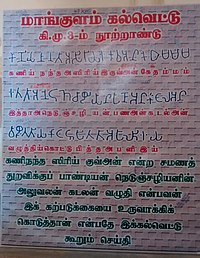
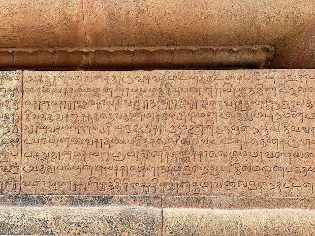

Reference
 ★ Andronov, M.S. (1970), Dravidian Languages, Nauka Publishing House★ Annamalai, E.; Steever, S.B. (1998), "Modern Tamil", in Steever, Sanford (ed.), The Dravidian Languages, London: Routledge, pp. 100–128, ISBN 978-0-415-10023-6
★ Caldwell, Robert (1974) [1856], A Comparative Grammar of the Dravidian or South-Indian Family of Languages, New Delhi: Oriental Books Reprint Corp., ISBN 8170690382
★Hart, George L. (1975), The poems of ancient Tamil : their milieu and their Sanskrit counterparts, Berkeley: University of California Press, ISBN 978-0-520-02672-8
★ Krishnamurti, Bhadriraju (2003), The Dravidian Languages, Cambridge Language Surveys, Cambridge University Press, ISBN 978-0-521-77111-5
★ Kesavapany, K.; Mani, A; Ramasamy, Palanisamy (2008), Rising India and Indian Communities in East Asia, Singapore: Institute of Southeast Asian Studies, ISBN 978-981-230-799-6
★ Kuiper, F. B. J. (1958), "Two problems of old Tamil phonology I. The old Tamil āytam (with an appendix by K. Zvelebil)", Indo-Iranian Journal, 2 (3): 191–224, doi:10.1007/BF00162818, S2CID 161402102
★ Lehmann, Thomas (1998), "Old Tamil", in Steever, Sanford (ed.), The Dravidian Languages, London: Routledge, pp. 75–99, ISBN 978-0-415-10023-6
★ Mahadevan, Iravatham (2003), Early Tamil Epigraphy from the Earliest Times to the Sixth Century A.D, Harvard Oriental Series vol. 62, Cambridge, Massachusetts: Harvard University Press, ISBN 978-0-674-01227-1
★ Meenakshisundaran, T.P. (1965), A History of Tamil Language, Poona: Deccan College, OCLC 246076230
★ Murthy, Srinivasa; Rao, Surendra; Veluthat, Kesavan; Bari, S.A. (1990), Essays on Indian History and culture: Felicitation volume in Honour of Professor B. Sheik Ali, New Delhi: Mittal, ISBN 978-81-7099-211-0
★ Ramstedt, Martin (2004), Hinduism in modern Indonesia, London: Routledge, ISBN 978-0-7007-1533-6
★ Rajam, VS (1992), A Reference Grammar of Classical Tamil Poetry, Philadelphia: The American Philosophical Society, ISBN 978-0-87169-199-6
★ Southworth, Franklin C. (1998), "On the Origin of the word tamiz", International Journal of Dravidian Linguistics, 27 (1): 129–132
★ Southworth, Franklin C. (2005), Linguistic archaeology of South Asia, Routledge, ISBN 978-0-415-33323-8